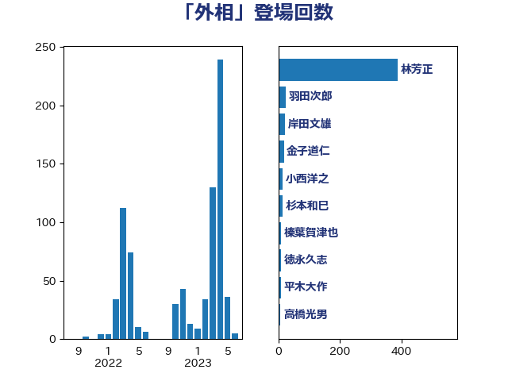

単語「外相」

| 林芳正 | 自由民主党 | 387 回 |
| 羽田次郎 | 立憲民主党 | 25 回 |
| 岸田文雄 | 自由民主党 | 21 回 |
| 金子道仁 | 日本維新の会 | 18 回 |
| 小西洋之 | 立憲民主党 | 14 回 |
| 杉本和巳 | 日本維新の会 | 13 回 |
| 榛葉賀津也 | 国民民主党 | 10 回 |
| 徳永久志 | 無所属 | 10 回 |
| 平木大作 | 公明党 | 8 回 |
| 高橋光男 | 公明党 | 7 回 |
| 金城泰邦 | 公明党 | 7 回 |
| 福山哲郎 | 立憲民主党 | 7 回 |
| 斎藤アレックス | 国民民主党 | 7 回 |
| 鈴木宗男 | 日本維新の会 | 6 回 |
| 篠原豪 | 立憲民主党 | 6 回 |
| 清水貴之 | 日本維新の会 | 6 回 |
| 和田有一朗 | 日本維新の会 | 6 回 |
| 吉田宣弘 | 公明党 | 6 回 |
| 鈴木貴子 | 自由民主党 | 5 回 |
| 竹内真二 | 公明党 | 5 回 |
| 音喜多駿 | 日本維新の会 | 4 回 |
| 青山大人 | 立憲民主党 | 4 回 |
| 鈴木敦 | 国民民主党 | 4 回 |
| 梅谷守 | 立憲民主党 | 4 回 |
| 岡田克也 | 立憲民主党 | 4 回 |
| 小田原潔 | 自由民主党 | 4 回 |
| 田島麻衣子 | 立憲民主党 | 3 回 |
| 田中健 | 国民民主党 | 3 回 |
| 清水真人 | 自由民主党 | 3 回 |
| 山田賢司 | 自由民主党 | 3 回 |
| 寺田稔 | 自由民主党 | 3 回 |
| 堀井巌 | 自由民主党 | 3 回 |
| 吉良州司 | 無所属 | 3 回 |
| 吉川ゆうみ | 自由民主党 | 3 回 |
| 務台俊介 | 自由民主党 | 3 回 |
| 高良鉄美 | 無所属 | 2 回 |
| 高木啓 | 自由民主党 | 2 回 |
| 野村哲郎 | 自由民主党 | 2 回 |
| 越智隆雄 | 自由民主党 | 2 回 |
| 米山隆一 | 立憲民主党 | 2 回 |
| 穀田恵二 | 日本共産党 | 2 回 |
| 浜田聡 | NHK党 | 2 回 |
| 河西宏一 | 公明党 | 2 回 |
| 武井俊輔 | 自由民主党 | 2 回 |
| 森本真治 | 立憲民主党 | 2 回 |
| 柴田巧 | 日本維新の会 | 2 回 |
| 松山政司 | 自由民主党 | 2 回 |
| 松原仁 | 立憲民主党 | 2 回 |
| 杉田水脈 | 自由民主党 | 2 回 |
| 山添拓 | 日本共産党 | 2 回 |
| 山本太郎 | れいわ新選組 | 2 回 |
| 大西健介 | 立憲民主党 | 2 回 |
| 和田政宗 | 自由民主党 | 2 回 |
| 佐藤正久 | 自由民主党 | 2 回 |
| 伊藤俊輔 | 立憲民主党 | 2 回 |
| 井上哲士 | 日本共産党 | 2 回 |
| 高村正大 | 自由民主党 | 1 回 |
| 青柳仁士 | 日本維新の会 | 1 回 |
| 青山繁晴 | 自由民主党 | 1 回 |
| 階猛 | 立憲民主党 | 1 回 |
| 阿部知子 | 立憲民主党 | 1 回 |
| 鈴木馨祐 | 自由民主党 | 1 回 |
| 重徳和彦 | 立憲民主党 | 1 回 |
| 道下大樹 | 立憲民主党 | 1 回 |
| 谷合正明 | 公明党 | 1 回 |
| 蓮舫 | 立憲民主党 | 1 回 |
| 萩生田光一 | 自由民主党 | 1 回 |
| 舩後靖彦 | れいわ新選組 | 1 回 |
| 美延映夫 | 日本維新の会 | 1 回 |
| 緒方林太郎 | 無所属 | 1 回 |
| 笠井亮 | 日本共産党 | 1 回 |
| 福島みずほ | 社会民主党 | 1 回 |
| 石井啓一 | 公明党 | 1 回 |
| 盛山正仁 | 自由民主党 | 1 回 |
| 甘利明 | 自由民主党 | 1 回 |
| 玄葉光一郎 | 立憲民主党 | 1 回 |
| 猪口邦子 | 自由民主党 | 1 回 |
| 片山さつき | 自由民主党 | 1 回 |
| 熊谷裕人 | 立憲民主党 | 1 回 |
| 滝波宏文 | 自由民主党 | 1 回 |
| 源馬謙太郎 | 立憲民主党 | 1 回 |
| 渡辺周 | 立憲民主党 | 1 回 |
| 渡辺創 | 立憲民主党 | 1 回 |
| 浜田靖一 | 自由民主党 | 1 回 |
| 浜口誠 | 国民民主党 | 1 回 |
| 横山信一 | 公明党 | 1 回 |
| 梅村みずほ | 日本維新の会 | 1 回 |
| 松川るい | 自由民主党 | 1 回 |
| 本庄知史 | 立憲民主党 | 1 回 |
| 早坂敦 | 日本維新の会 | 1 回 |
| 島尻安伊子 | 自由民主党 | 1 回 |
| 岩屋毅 | 自由民主党 | 1 回 |
| 山本剛正 | 日本維新の会 | 1 回 |
| 山口晋 | 自由民主党 | 1 回 |
| 小野田紀美 | 自由民主党 | 1 回 |
| 小熊慎司 | 立憲民主党 | 1 回 |
| 小泉進次郎 | 自由民主党 | 1 回 |
| 宮本徹 | 日本共産党 | 1 回 |
| 宮崎雅夫 | 自由民主党 | 1 回 |
| 宮口治子 | 立憲民主党 | 1 回 |
| 太栄志 | 立憲民主党 | 1 回 |
| 大塚耕平 | 国民民主党 | 1 回 |
| 城内実 | 自由民主党 | 1 回 |
| 古川禎久 | 自由民主党 | 1 回 |
| 佐藤啓 | 自由民主党 | 1 回 |
| 伊波洋一 | 無所属 | 1 回 |
| 中山展宏 | 自由民主党 | 1 回 |
| 三上えり | 立憲民主党 | 1 回 |